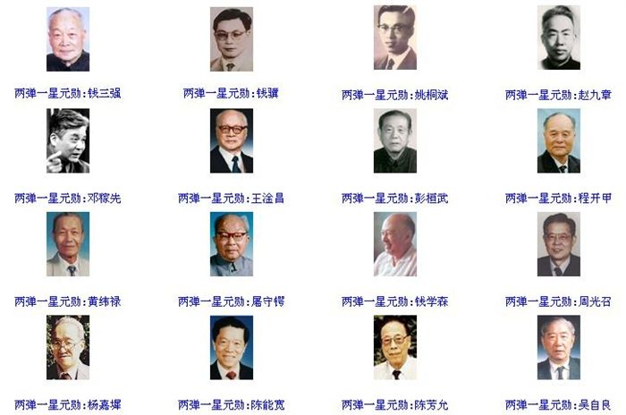

“两弹一星”指核弹、导弹、人造卫星。
1960年11月5日，中国仿制的第一枚导弹发射成功，1964年10月16日15时中国第一颗原子弹爆炸成功，使中国成为第五个有原子弹的国家；1967年6月17日上午8时中国第一颗氢弹空爆试验成功；1970年4月24日21时中国第一颗人造卫星发射成功，使中国成为第五个发射人造卫星的国家。中国的“两弹一星”是20世纪下半叶中华民族创建的辉煌伟业。
20世纪50年代、60年代是极不寻常的时期，当时面对严峻的国际形势，为抵制帝国主义的武力威胁和核讹诈，50年代中期，以毛泽东同志为核心的第一代党中央领导集体。根据当时的国际形势，为了保卫国家安全、维护世界和平，高瞻远瞩，果断地作出了独立自主研制“两弹一星”的战略决策。大批优秀的科技工作者，包括许多在国外已经有杰出成就的科学家，以身许国，怀着对新中国的满腔热爱，响应党和国家的召唤，义无反顾地投身到这一神圣而伟大的事业中来。他们和参与“两弹一星”研制工作的广大干部、工人、解放军指战员一起，在当时国家经济、技术基础薄弱和工作条件十分艰苦的情况下，自力更生，发愤图强，依靠自己的力量和苏联的帮助，用较少的投入和较短的时间，突破了核弹、导弹和人造卫星等尖端技术，取得了举世瞩目的辉煌成就。
背景介绍中华人民共和国成立后，在五六十年代面对帝国主义的武力威胁和大国的核讹诈下，于1956年在周恩来、陈毅、李富春、聂荣臻的主持下，制订了《1956至1967年科学技术发展远景规划纲要》。
而毛泽东则在1958年先后表示“我们也要搞人造卫星！搞原子弹、氢弹、导弹，我看有十年功夫是完全可能。”即便当时中国开发上述技术的环境还十分落后和艰苦，但不少科学家从此开始投入这些开发计划。
“两弹一星”是对中国依靠自己的力量掌握的核技术和空间技术的统称，并没有明确具体指哪两颗弹和哪一颗星。
邓小平说过：“如果六十年代以来中国没有原子弹、氢弹，没有发射卫星，中国就不能叫有重要影响的大国，就没有这样的国际地位，这些东西反映一个民族的能力，也是一个民族、一个国家兴旺发达的标志。”
江泽民在表彰“两弹一星”科技专家大会上的讲话提到：一九六四年十月十六日，中国第一颗原子弹爆炸成功；一九六七年六月十七日，中国第一颗氢弹空爆试验成功；一九七零年四月二十四日，中国第一颗人造卫星(东方红一号)发射成功，在宇宙中唱响了东方红歌曲。
发扬精神我们要学习“两弹一星”功臣们勇于探索、勇于创新的精神。在“两弹一星”的研制过程中，我们看到了高水平的技术跨越。从原子弹到氢弹，我们仅用两年零八个月的时间，比美国、前苏联、法国所用的时间要短得多。在导弹和卫星的研制中所采用的新技术、新材料、新工艺、新方案，在许多方面跨越了传统的技术阶段。“两弹一星”是中国人民创造活力的产物。"两弹一星"精神表述：热爱祖国、无私奉献、自力更生、艰苦奋斗、大力协同、勇于攀登。
21世纪的国际科技和经济的竞争，从根本上讲是高科技、高素质人才的竞争，是知识创新、技术创新的竞争。要把建设有中国特色社会主义事业推向前进，要在激烈的国际竞争中得到发展，就要努力学习和发扬功臣们的爱国主义精神、无私奉献精神和勇于创新的精神，团结一心，励精图治，不畏艰险，勇往直前！
两弹一星精神——“热爱祖国、无私奉献，自力更生、艰苦奋斗，大力协同、勇于登攀。”
两弹一星精神是中华人民共和国诸多“精神”及政治语汇中的一个，象征了在欠缺良好环境下，从事科学技术开发研究的精神，也是科教兴国政策的开端。
对于中国而言，两弹一星是在非常艰苦、没有外援的环境下所开发出来的成果。而“两弹一星”精神象征了中华民族自力更生、在社会主义之下集中力量从事科学开发研究，并创造“科技奇迹”的态度与过程，组合的元素则为“爱国主义”、“集体主义”、“社会主义”与“科学精神”，并可以衍生至“科技创新”“知识经济”等领域。
"两弹一星”精神，是爱国主义、集体主义、社会主义精神和科学精神的活生生体现，是中国人民在20世纪为中华民族创造的新的宝贵精神财富。我们要继续发扬光大这一伟大精神，使之成为全国各族人民在现代化建设道路上奋勇开拓的巨大推动力量。
"两弹一星”精神，当成政治语汇可以用在科技发展、高等教育、人才培育等领域上，例如“用两弹一星精神开发信息产业”等。
功勋人物为了替未来的科教兴国政策铺路，确定未来政策主轴，1999年9月18日，在庆祝中华人民共和国成立50周年之际，由中共中央、 国务院及中央军委制作了“两弹一星”功勋奖章，授予给（按姓氏笔画排序）23位为研制“两弹一星”作出突出贡献的科技专家。
“两弹一星”元勋情况：
王淦昌（1907.05.28~1998.12.10）生于江苏常熟，核物理学家，中国惯性约束核聚变研究的奠基者。是中国核武器研制的主要科学技术领导人之一。 赵九章（1907.10.15~1968.10.26）生于河南开封，地球物理学家和气象学家。是中国地球物理和空间物 理的开拓者，人造卫星事业的倡导者、组织者和奠基人之一。 郭永怀（1909.04.04~1968.12.05）空气动力学家，生于山东省荣成县。他是中国大陆力学事业的奠基人之一，在力学、应用数学和航空事业方面有突出贡献。 钱学森（1911.12.11~ 2009.10.31）浙江杭州人，汉族，1959年8月加入中国共产党，博士学位，中将军衔，被誉为“中国导弹之父”，“中国火箭之父”，“导弹之王”，2007年被评为感动中国年度人物。 钱三强（1913.10.16~1992.06.28）原子核物理学家，中国原子能事业的主要奠基人和组织领导者之一，浙江湖州人，在研究铀核三裂变中取得了突破性成果。 王大珩（1915.02.26~2011.7.21）光学专家，生于江苏吴县。中国光学界的主要学术奠基人、开拓者和组织领 导者。开拓和推动了中国国防光学工程事业。
彭桓武（1915.10.06~2007.02.28）理论物理学家，生于吉林长春。在英国爱丁堡大学获博士学位。曾参与并领导了中国的原子弹、氢弹的研制计划。 任新民（1915.12.05~2017.02.12）航天技术和火箭发动机专家，安徽宁国人，中国导弹与航天事业开创人之一，曾任卫星工程总设计师。 陈芳允（1916.04.03~2000.04.29）无线电电子学家，浙江黄岩人。1964年至1965年，提出方案并参与研制出原子弹爆炸测试仪器，并为人造卫星上天作出了贡献。 黄纬禄（1916.12.18~ 2011.11.23）安徽省芜湖人，自动控制和导弹技术专家，中国导弹与航天技术的主要开拓者之一。曾任中国液体战略导弹控制系统的总设计师。 屠守锷（1917.12.05~2012.12.15）浙江湖州人，火箭技术和结构强度专家。曾任地空导弹型号的副总设计师，远程洲际导弹和长征二号运载火箭的总设计师。 吴自良（1917.12.25~2008.05.24）材料学家，生于浙江浦江县。1948年获美国卡内基理工大学理学博士学位。在分离铀235同位素方面作出突出贡献。 钱骥（1917.12.27~1983.08.28）江苏金坛人。地球物理与空间物理学家、气象学家、航天专家。是中国人造卫星事业的先驱和奠基人。
程开甲（1918.08.03~ 2018.11.17）江苏吴江人,核武器技术专家。中国第一颗原子弹研制的开拓者之一、核武器试验事业的创始人之一，核试验总体技术的设计者。 杨嘉墀（1919.07~2006.06.11)江苏省吴江县人，中国航天科技专家和自动控制专家、自动检测学的奠 基者。领导和参加了卫星总体及自动控制系统研制。 王希季（1921~ ）卫星和卫星返回技术专家，生于昆明。在美国弗吉尼亚理工学院获硕士学位。任航天工业部总工程师，返回式卫星总设计师。 姚桐斌（1922.09.03~1968.06.08）江苏省无锡人，导弹和航天材料与工艺技术专家，中国导弹与航天材料、工艺技术研究所的主要创建者、领导者。 陈能宽（1923~2016.05.27 ）材料科学与工程专家，生于湖南慈利县。1960年以后从事原子弹、氢弹及核武器的发展研制。 邓稼先（1924.06.25~1986.07.29）安徽怀宁人，理论物理学家，核物理学家。在原子弹、氢弹研究中，领导了爆轰物理、流体力学、状态方程、中子输运等基础理论研究。
朱光亚（1924.12.25~ 2011.02.26）核物理学家，湖北武汉人。1957年后从事核反应堆的研究工作。1994年中国工程院成立，朱光亚出任工程院首任院长。 于敏（1926.08.16~2019.01.16）核物理学家，中国科学院学部委员。1960年底开始从事核武器理论研究,在氢弹原理突破中解决了热核武器物理中一系列关键问题。2015年被评为感动中国年度人物。 孙家栋（1929~ ）辽宁复县人，长期领导中国人造卫星事业，中国探月工程总设计师。上世纪60年代，孙家栋受命为卫星计划技术总负责人，2017年被评为感动中国年度人物。 周光召（1929.05.15~ ）湖南长沙人，理论物理、粒子物理学家。上世纪60年代初开始核武器的理论研究工作，曾任中国科学院院长。
 巨大成功“两弹一星”事业的巨大成功，依靠于党中央的英明决策和各方面的有力支持，是社会主义制度能够“集中力量办大事”的优势的生动体现。但是，我们所拥有的一切优势和条件，都要通过参与这一事业的所有人员特别是他们中的功臣来实现。“两弹一星”功臣们的作用极其重要，功臣们的业绩彪炳史册，功臣们的精神光耀千古，永远是我们学习的榜样。 我们要学习功臣们的爱国主义精神。他们中的许多人都在国外学有所成，拥有优越的科研和生活条件，为了投身于新中国的建设事业，冲破重重障碍和阻力，毅然回到祖国。几十年中，他们为了祖国和人民的最高利益，默默无闻，艰苦奋斗，以其惊人的智慧和高昂的爱国主义精神创造着人间奇迹。“中华民族不欺侮别人，也绝不受别人欺侮”，是他们的坚定信念。爱国主义是他们创造、开拓的动力，也是他们克服一切困难的精神支柱。
我们要学习功臣们艰苦奋斗、无私奉献的精神。正是有了这样的精神，他们不怕狂风飞沙，不惧严寒酷暑，没有条件，创造条件；没有仪器，自己制造；缺少资料，刻苦钻研。就是这样，他们以惊人的毅力和速度从无到有、从小到大，创造出“两弹一星”的惊人伟绩。